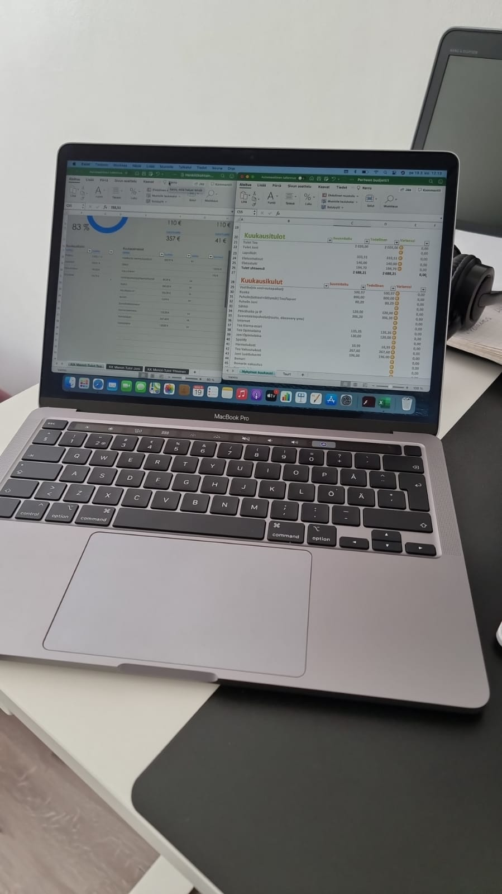

Mimmit koodaa järjestää yrityksien kanssa erilaisia koulutuksia. Suurin osa järjestetään workshop tyylisesti päivän koulutuksena mutta sieltä löytyy paljon muitakin jos niihin on vain mahdollisuus osallistua. Koulutuksiin pääsee ilmottautumisjärjestyksessä, joten pitää olla nopea. Nämä tilaisuudet ovat myös hyvä paikka verkosoitua alalle.
Tämä Full stack open 2022 aloitettiin yhdessä mieheni kanssa eikä olla vielä päästy kuin tutustumaan kurssiin. Tavoitteena on kumminkin saada suoritettua koko kurssi sekä mahdollisesti tehdä 10 opintopisteen harjoitustyö ja sen jälkeen päästä mahdollisesti työhaastatteluun.